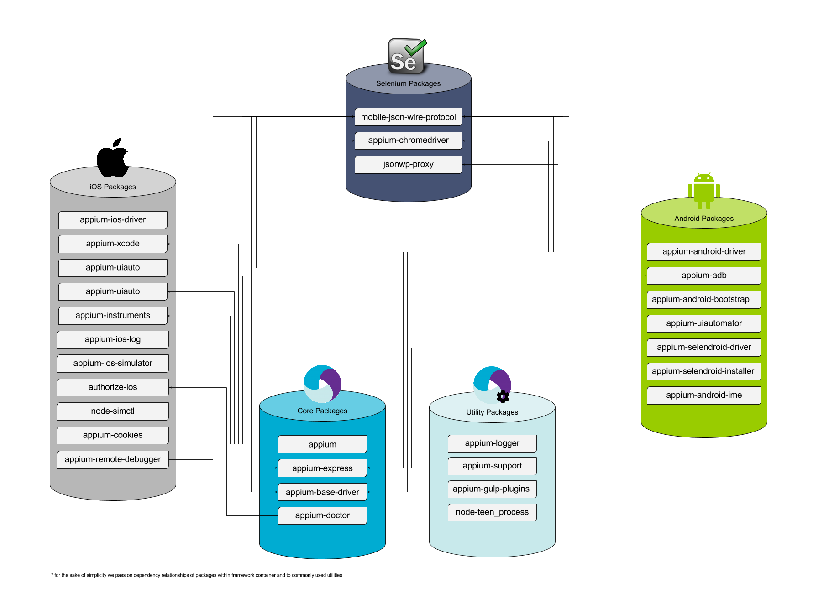

Appium 简述

appium
- 运行时的基本检查
- 节点版本（>= 4）
- CLI 参数检查
- 包含所有可用和支持的CLI参数
- 检是否有冲突和弃用
- 统一存放日志
- 统一存放npmlog, winston和appium-logger
- 启动AppiumDriver（继承Basedriver）
- 为iOS/Android/Selendroid/Fake Driver 建立会话
- 创建/删除Appium会话
- 启动baseServer (appium-express)
- 通过驱动给出的路径
appium-express (部分appium basedriver)
- 启动express server（允许x-domain-origin）
- 从AppiumDriver初始化
- 超时处理
- 提供一个用于测试的静态页面
- 将req/res事件记入日志
mobile-json-wire-protocol (部分appium basedriver)
- 提供了Appium命令列表
- 通过协议的驱动子类 -客户端和驱动程序之间的中间件
- 处理驱动程序的jwp代理
- 包含所有类型错误的错误类
- 消除错误响应
- 将参数封装/解封到命令中
- 检查所需参数，验证参数
appium basedriver
- 每个实例化都有一个单独的测试会话
- 包含对caps的约束 （platformName必须存在等）
- 验证功能
- 运行具有单个并发性的命令
- 处理会话重启
- 处理滑动选项
- DeviceSettings负责设备的get/update管理
- 包含基本命令
- 找到元素
- 创建/删除会话
- 处理超时
- 设备的set/update设置
- 为命令提供帮助方法
appiium iosdriver
- 也可以作为独立服务器运行（从appium-express继承了小部分服务）
- 支持的策略：“name”，“xpath”，“id”，“-ios uiautomation”，“class name”，“accessibility id”
- 可以启动一个模拟器或一个真实的设备（需要标明udid）
- 每个类型的说明
- removeInstrumentsSocket
- setBundleIdFromApp
- createInstruments
- runSimReset, isolateSimDevice, setLocale || runRealDeviceReset
- setPreferences || runRealDeviceReset
- startLogCapture
- prelaunchSimulator || (noop)
- startInstruments
- onInstrumentsLaunch
- configureBootstrap
- setBundleId
- setInitialOrientation
- initAutoWebview
- waitForAppLaunched
- 所有帮助说明都在driver.js中
- 包含一组更具体的功能约束
- 有使用appium-xcode构建和运行Safari（safari-launcher）的逻辑
- 实现iOSdriver的命令
- Selenium命令被编译为ui-automator命令
- 命令将会发送到uiAutoClient（appium-uiauto）
- 连接到appium远程调试器
appium-xcode
- 运行shell命令从Xcode返回有用的数据，比如
- getPath
- getVersion
- getAutomationTraceTemplatePath
- getMaxIOSSDK
- …
- 内置自动重试
appium-uiauto
- 封装 iOS UI Automation 框架的
- 通过socket连接进行通信
- 运行由sendCommand函数填充的命令队列
- 处理来自ui-automation的响应（作为缓冲区）
- 使用osascript旋转屏幕截图
- 提供bootstrap simulator/realdevice (dynamic-bootstrap)的方法
- 在iOS UI自动化上下文（非节点）中运行的JavaScript文件
- 负责执行实际的iOS UI Automation命令
- 参考 UIAutomation docs
- 命令流程就像
- Webdriver 命令-> iOS driver 命令 -> uiauto-命令
appium-instruments
- 封装运行instruments的命令
- 很多exec调用与instruments二进制义互
- 所有这些都采取回调来获取结果
- 必须使用“iwd”包编译软件包
- 特殊的Instruments包不存在命令延迟 - 还包含较旧版本的iwd instrument（v4 - v7）
appium-ios日志
- 捕获iOS模拟器或实际设备的控制台，性能和崩溃日志
- 通过调用tail来从系统路径获取日志（模拟器设备）
- 或通过调用deviceconsole（实际设备）
- 使用远程调试器来抓取性能日志
- 崩溃日志保留在系统上的“.crash”文件中
appium-iOS-模拟器
- 封装iOS模拟器应用程序
- 启动和关闭（杀死所有）模拟器
- 更新设置和本地
- 更新/清除 safari
- 获取有关模拟器设备的元数据
- 使用simctl与模拟器通信
- 适用于Xcode 6和7
authorize-iOS
- 程序预先授权Instruments针对iOS设备运行UIAutomation脚本
- 通过调用“DevToolsSecurity -enable”来启用开发人员工具
- 授权用户作为开发人员调用“authorizationdb”
- 改变模拟器目录的所有权
node-simctl
- 封装simctl二进制（cli实用程序来控制iOS模拟器）
- 作为xcrun的子命令执行（从命令行查找或调用开发人员工具）
- 包含功能
- 安装/删除应用程序
- 启动和关闭模拟器
- 创建/清除/删除设备
- 获取设备列表
appium-cookies
- 简单的包来创建和接收cookie
- 在appium-iosdriver中使用，以在Web上下文中实现jswonwire cookie命令
appium-chromedriver
- 封装 chromedriver
- 下载并安装chromedriver二进制文件
- 启动，重新启动并停止（或杀死所有）chrome实例
- 使用appium-jsonwp-proxy向驱动程序发送json wire protocol命令
jsonwp-proxy (部分appium basedriver)
- 允许将json wire协议命令发送到了解它的服务器（浏览器驱动程序）
- 解析json的响应
- 允许代理服务器的请求
- 用于在Chromium-Chromedriver和appium-selendroiddriver中进行通信
appium-androiddriver
- 类似于appium-iosdriver，它可以作为独立服务运行
- 自动化模拟器和实际设备上的本地，混合和移动Web应用程序
- 负责安装Android软件包到设备
- 如果需要，运行chromedriver会话
- 包含一组更具体的功能约束
- 使用appium-adb与emulator/simulator/realdevice进行交互
- 和appium-android-bootstrap来执行实际的命令
- 包含帮忙找出哪个网页视图属于哪个应用程序包，反之亦然
appium-adb
- 封装 Android Debug Bridge（adb）
- 包含一些基本的rpc到adb二进制的命令
- 容纳jar文件来运行特殊用例，例如签名，验证应用程序或移动清单
- 允许与webdriver协议无关的特殊（移动专用）模拟器命令
- 锁定屏幕
- 按返回按钮
- 按home按钮
- 设置/获取飞行模式
- 设置/获取wifi状态
- 捕获logcat
- 处理模拟器/模拟器动作（例如重启）
appium-androidbootstrap
- JavaScript界面和Java代码，用于与Android UI Automator进行交互
- 构建包含执行命令的逻辑的AppiumBootstrap.jar
- 对应的 iOS 上的 appium-uiauto
- 一旦启动，就会创建一个到设备的web scoket连接
- 应用程序提供启动/关闭/发送命令接口
- 命令流程如下：
- Selenium 命令 - > appium-adb - > appium-androidbootstrap - > 使用Android UI Automator 框架的 Java 代码
appium-uiautomator
- 启动和关闭uiautomator服务器由appium-android-bootstrap jar建立
- 命令流程就像
- appium-android-bootstrap:start -> appium-uiautomator:start -> appium-adb:install bootstrap
appium-selendroiddriver
- 类似于appium-androiddriver，它可以作为独立服务运行
- 使用appium-selendroid-installer下载并安装Selendroid
- 包含几个Selendroid特定的逻辑，以确保无缝集成
- 包含一组更具体的功能约束
- 使用jsonwp-proxy与服务器交互
- 使用appium-adb启用在Selendroid中未实现的命令
appium-selendroid 安装程序
- 包含并导出设置逻辑
- 下载Selendroid
- 确定AndroidManifest的位置
- 确定Server APK的位置
- 提取这两个文件
- 复制和清理文件
appium-android-ime
- 允许从 Android 设备发送和接收 unicode 字符
- 将文本编码为UTF-7将其发送到设备并将其重新编码为 Unicode
- 由 appium-androiddriver 和 appium-selendroiddriver 使用
appium-doctor
- 在启动Appium之前诊断，报告和修复常见的Node，iOS和Android配置问题
- 暴露cli命令“appium-doctor”
- 它检查
- Android:
- android sdk存在并正确配置
- env变量和路径检查
- iOS:
- 安装了xcode（使用命令行工具）
- 开发工具安全检查
- auth检查
- nodejs 检查
appium-gulp-plugins
- 具有定制插件的开发包使用交叉应用模块（仅适用于Appium开发）
- 包含任务
- e2e和单元测试（覆盖率报告）
- 将ES2016 转换成 ES5
- 静态代码分析（jshint）
- 开发人员的任务
appium-remote-debugger
- RPC客户端将Appium连接到iOS网页浏览
- 可以连接到WebKit devtools
- 仅适用于iOS
- 有两个rpc客户端类
- remote-debugger-rpc-client：使用连接到localhost的tcp6：27753
- webkit-rpc-client：使用WebSockets连接到ws：// localhost：27753 / devtools / page / $ {pageId}
node-teen_process
- 助手模块暴露：
- exec：在引擎盖下使用spawn的exec的ES7（async / await）实现
- SubProcess：在使用spawn时减少样板（特别是在async / await上下文中使用时）
appium 日志
- 运行时，日志器默认为 npmlog，
- 暴露了几乎所有的Appium软件包使用的getLogger函数
- 如果有一个已经运行的记录器，那么所有的东西都会记录
appium-support
- 用于支持跨应用程序包的库的实用程序函数。
- 为一些常见的操作提供封装，如
- 系统方法（isWindows，isLinux ...）
- 实用程序方法，如hasValue，escapeSpace
- 一堆fs方法
- plist帮助解析和更新plist文件
本文由 校长 翻译，由 lihuazhang 校验。